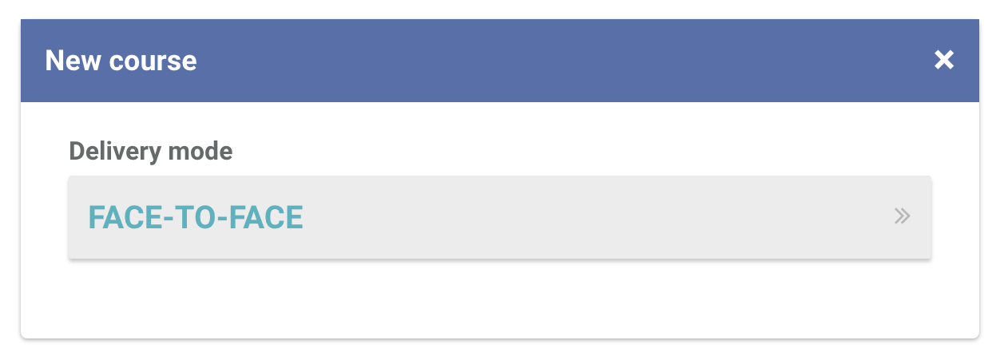
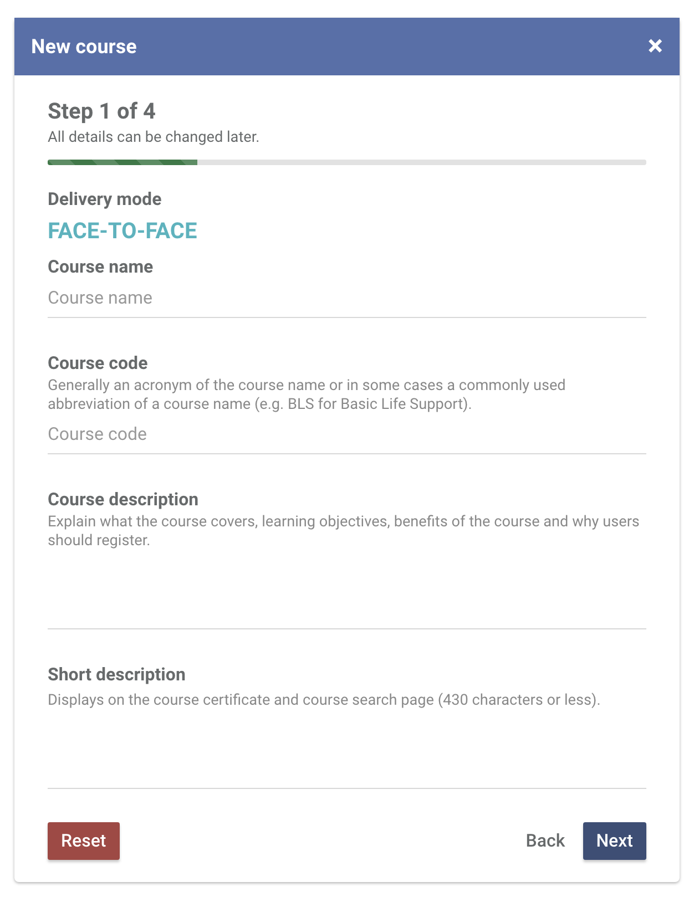
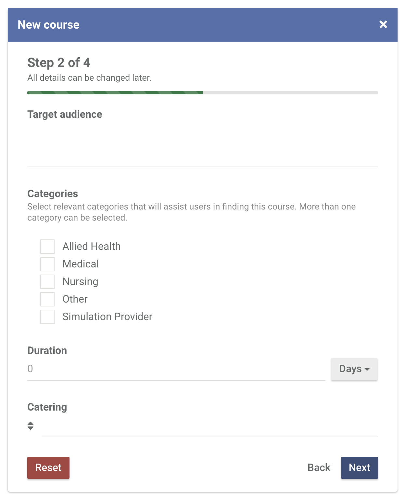
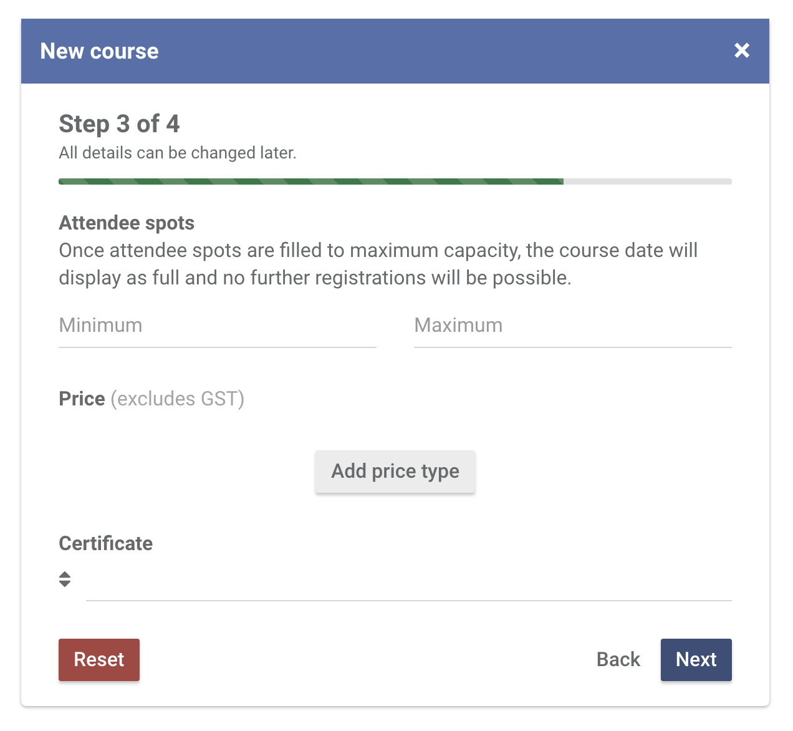
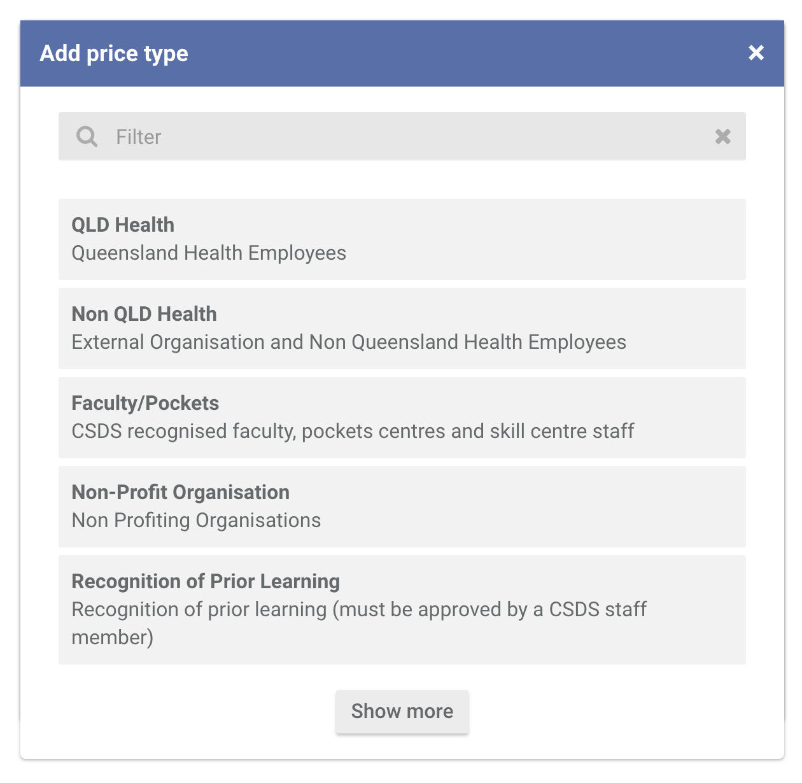
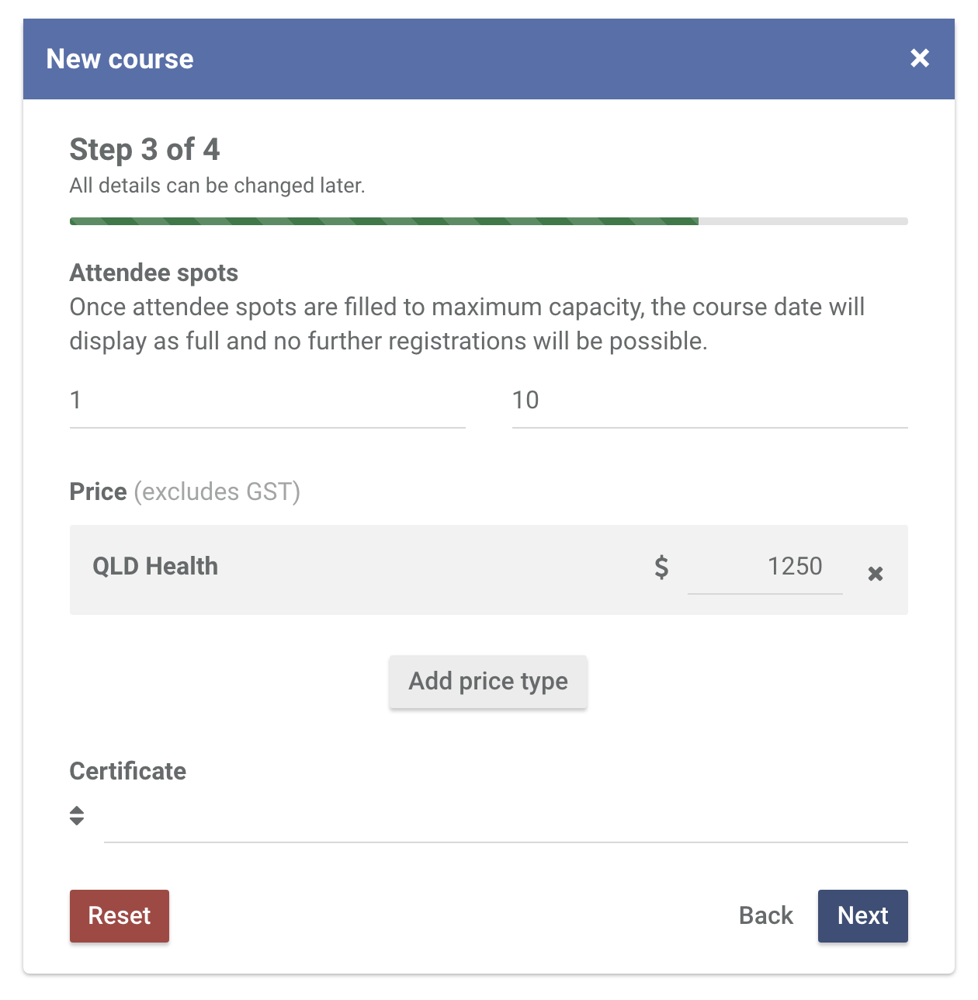
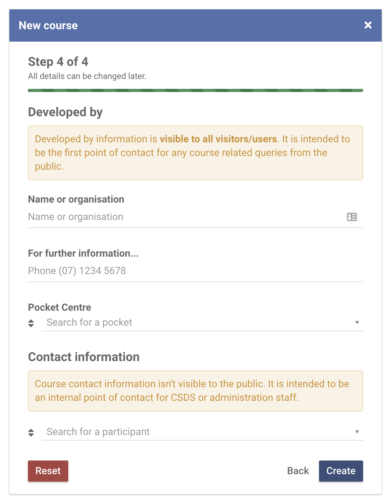

Head over to the Courses section and at the top right of the page, click New course.
In the New course popup, select Face-to-Face.
Fill out basic information about the course. Click Next.
Note: Course code can only contain alphanumeric characters, and '-'.
Continue filling out information about the course in Step 2. Click Next.
Continue filling out information about the course in Step 3. You have to specify at least 1 price type. Click Add price type.
To add a price type, click on a price type. Use the search bar to filter the price types or click Show moreuntil you find the one you need for. Once you're done, click Next.
Complete the rest of the fields and click Next.
Finally, fill out the information on who developed the course. All fields are required. If the course was developed by another organisation thru your Pocket Centre, specify your Pocket Centre.
Click Create to create your course.
You will now be redirected to the course profile page where you can add completion requirements, add a course flyer, add prererequisites, add pre-reading, add course materials and categorise your course to the relevant NSQHS standards.